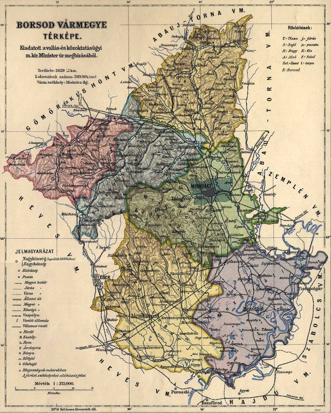
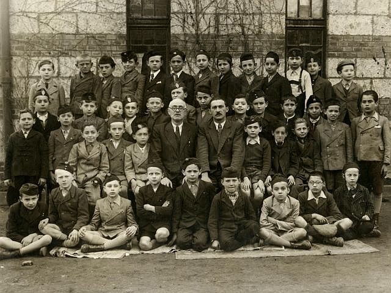
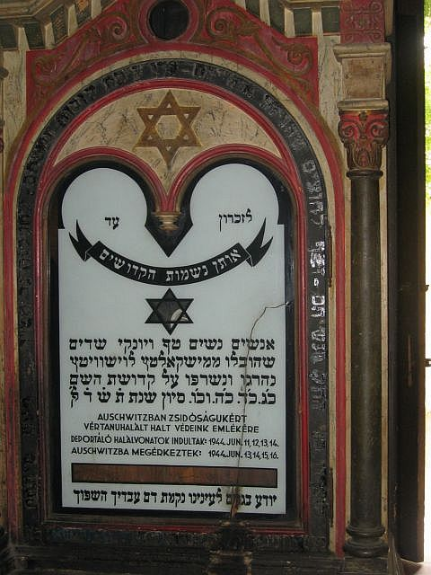
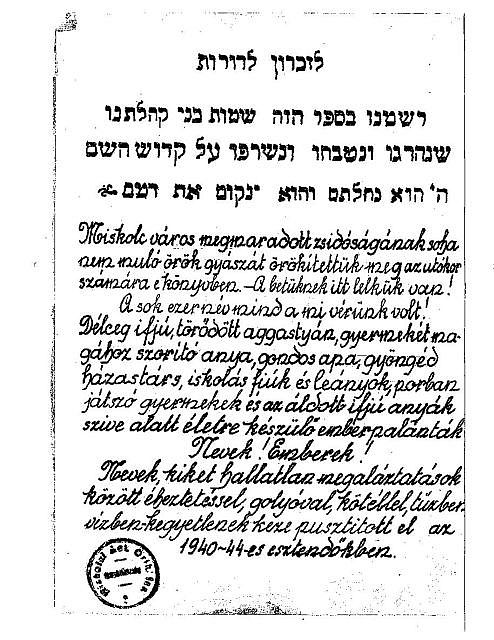

|
· Background · Database · Acknowledgements · Searching the Database |
This database contains information about 10,831 Holocaust victims from Miskolc, Hungary and surrounding towns.
The purpose of this project is to commemorate approximately ten thousand Jewish victims of the Holocaust of the city of Miskolc and of those who lived in 134 different towns in the county of Borsod. (For a complete listing of the surrounding towns and information available, please see the "Database" section below.
The city of Miskolc in the 1940s was reported to be the second largest city in Hungary, with a population of about 100,000, which included approximately 14,000 Jews. Miskolc was also the seat of the county of Borsod. Besides Miskolc, Jews lived in some very large and some small towns in Borsod county that we call "the surroundings." (See the below map of the County of Borsod.)

From the early 1940s, many Jewish Hungarian men of military age, who were able to perform physical labor, were inducted into labor service units as part of the Hungarian military since Jews were not allowed to carry arms or wear uniforms with military insignia. From about 1942 they could only wear civilian clothes, an armband, and a military cap without insignia. By 1944 most of the able bodied men were in labor service units.
The rest of the Jewish population remained in their homes until the German occupation of Hungary in March 1944. Thereafter, Jewish men, women, children and the elderly outside of Budapest were progressively put into ghettoes and later deported to concentration camps. Jews of Miskolc and surroundings were deported in jam packed freight cars to Auschwitz in June 1944. The trains left the Miskolc area on June 11, 12, 13 and 14 and arrived in Auschwitz on June 13, 14, 15 and 16. Later on, members of some labor service units were also deported to German concentration camps and they also died in labor service, especially on the Ukrainian front.
The Miskolc martyrs list was compiled by members of the Jewish Community who survived the Shoah and returned to Miskolc and surrounding towns from concentration camps or labor service after WWII. A copy of this list was located at the Kazinczy Street Synagogue of Miskolc in 2007 and was used for this project. This original community list at the synagogue consists of approximately 406 manually typed pages, some already faded. Thus, our list of martyrs for the city of Miskolc contains 6,588 names with a person’s occupations and street address as available from the community list. In comparison, the Miskolc Yizkor Book, entitled "Miskolc és Környéke Mártirkönyve" (The Book of Martyrs of Miskolc) by Rav Slomo Paszternak, 1970, contains an estimated 300 or more names, but it does not include a list of occupations and addresses. The two Miskolc lists vary however, as some names are spelled differently and some may be available in one and not in the other list. Thus the advantage of our and the original community list used in this project is that besides the name and year of birth of the martyr it also contains the occupation and former resident street address for the city of Miskolc. This additional information can be important to the genealogical researcher as many of the names are similar. For the list of martyrs in the other towns of Borsod county, our list contains 4,243 names in 134 towns whereas Paszternak has a pproximately 66 additional towns and an estimated 3,400 more names. For the other towns we do not have street addresses.
|
Miskolc Fourth Grade Jewish Elementary School Class 1942 In the "Erzsébet Izraelita Elemi Iskola"; probably most of these students perished in the Holocaust in 1944: see the list of the student names and their former addresses below. |
|
 |
|
|
The names of the students in the photograph are listed by rows starting with the student on the extreme left of each row. Most students should have been born in 1932. Those listed with a birth year other than 1932 are probably listed in error. Names were recorded by John Kovacs based on his memory and the addresses were taken from the Miskolc community list. The address column was left blank when a person’s surname and given name was not in the community list; the reason could be that they survived or their relatives or friends did not report them.
| Top Row | Address in Miskolc |
| Czeisler, György | Ady Endre u. 22 b. 1932 |
| Groszman, László | |
| Wruszerbai, Imre | |
| Weisz, Andor Zöldfa | u. 25 b. 1934 |
| Neuwalder, Ernö | Kazinczy u. 6 b. 1930 |
| Adorján, György | Lonovits u. 2 b. 1932 |
| Markovits, Dezsö | |
| Gotlib, Lajos | Arany J. u. 100 b. 1932 |
| Herskovits, Miklós | Vörösmarty u.55 |
| Váradi, György | Mindszent u. 20 b. 1930 |
| Bonis, Péter | He is not listed, but believe he lived on Széchenyi u. |
| Schlezinger, Jenö | Rózsa u. 4 |
| Silberman,Salamon | Paloczy u. 6 |
| Third Row | Address in Miskolc |
| Róth, Ernö | |
| Schwarz, László | Vörösmarty. u. 18 |
| Bornstein, István | |
| Ronai, István | |
| Klein, Zoltán | |
| Rosenberg, Miklós | Szentpály u.12 b. 1934 |
| Mandel, Pál | |
| Márkusz, László | |
| Deutsch, Ernö | |
| Pugács, Ernö | |
| Lichtner, Ernö | Paloczy u. 7 |
| Lusztig, Sándor | Tetemvár alsos 2 |
| Ungar, Arthur | |
| Second Row | Address in Miskolc |
| Róth, Adolf | Mindszent u. 4 b.1933 |
| Komlós, József | |
| Lefkovits, Marton | |
| Zsupnik, Miklós | Lehel u. 2 b. 1932 |
| Feig, István | Széchenyi u. 89 b.1932 |
| Hauer, Bertalan, School Principal | Leventa u. 14 murdered by Hungarian fascists |
| Buxbaum, József, Class Teacher | survived |
| Kovács, János ** | Bizony Ákos u. 15 b. 1932 survived |
| Weisz, György | Vay u. 15 b. 1932 |
| Márkusz, Tibor | Szendrey u.17 b.1932 |
| Front Row | Address in Miskolc |
| Winger, Ábel | |
| Kohn, Gyözö | |
| Kovács, Pál | Vörösmarty u.16 b. 1932 (my best friend) |
| Goldstein, László | Zsolcai Kapu 32 b. 1932 |
| Schönbrun, Miklós | Zsolcai Kapu 14 b. 1934 |
| Grün, Gyula | |
| Preusz, Lázár | Hunyadi u. 14 b. 1932 |
| Rozenfeld, Pál | Szentpéteri K. 57 b. 1932 |
| Stern Sándor | Széchenyi u. 87 b. 1932 |
**This photograph was preserved by Kovács János, one of the students who survived. John Kovacs, Bloomfield, MI, j.kovacs@sbcglobal.net.
|
English translation of the Hungarian text
follows:
This is a memorial for our blood. They died a martyr’s death in Auschwitz for their Jewishness. The deportation death trains left on June 11, 12, 13, and 14, 1944 and arrived in Auschwitz on June 13, 14, 15, 16, 1944. |
|
 |
The following is the introduction in Hebrew and Hungarian
to the original list of names in the Synagogue collection.
The English translation of the Hungarian text follows:
| For the everlasting mourning of the surviving Jewry of Miskolc and surroundings and for future generations we have immortalized the names of those murdered in the Holocaust. Each name has a soul. These many thousands were our blood: the splendid youth, tired old men, mothers who held tightly their children, attentive fathers, affectionate partners in marriage, school boys and girls, playful children and the youthful mothers under whose hearts were the lives of future children. Names of human beings! Our people suffered the ultimate humiliation and were cruelly annihilated during the years of 1940-1944 through the cruel use of starvation, bullets, ropes, fire and water. |
|
 |
This database includes 10,831 records of residents from Miskolc and surrounding towns. The fields for this database are as follows:
Note 1: Given and husband’s given names.
In some cases, the record will show the name as "N." Although it is possible that this could be the first initial for a person’s name, we believe the "N" denotes unknown.
Note 2: Occupations.
To aid the researcher in translating the occupations from this field from Hungarian to English, please see the JewishGen InfoFile "Hungarian Occupations" at http://www.jewishgen.org/databases/Holocaust/HungarianOccupations.html.
Note 3: Towns.
In addition to Miskolc, the following is an alphabetical table of towns within the "Miskolc surroundings".
Aggtelek Felsöábrány Mezökeresztes * Sály Alsóábrány Felsökelecsény Mezőkővesd Sáta Alsószuha Felsönyárád Mezőnagymihály Sikátor Alsótelekes Felsőzsolca Mezönyárád Szakácsi Alsózsolca Galvács Mucsony Szalonna Arnót Gelej Nagybarca Szendrö * Ároktő Gesztely Nagycsécs Szentistván Balaton Görömböly Nagyvisnyó Szentsimon Bánréve Hámor Nekezseny Szihalom Barcika Hangony Nemesbikk Szirma Bélapátfalva Harsány Nyékládháza Szirmabesenyő Belsöböcs Hejöbába Omány Szuhakálló Berente Hejőcsaba * Ónod * Szuhogy Bogács Hejökeresztur Ózd * Tardona Boldva Hejöpapi Parasznya Tibolddaróc Bolyok Hejöszalonta Pusztaravasz Tiszabábolna Borsodgeszt Hódoscsépány Putnok * Tiszadorogma Borsodivánka Igriczi Radostyán Tiszaeszlar Borsodnádasd Jákfalva Rakaca Tiszagyulaháza Borsodszemere Kácsfürdö Rakacaszend Tiszakeszi Borsodszentgyörgy Kánó Rudabánya Tiszaluc * Bükkaranyos Kelemér Ragály Sajóecseg Tiszapalkonya Center Keresztespüspöki Sajóivánka Tiszaszederkény Csermely Királd Sajókápolna Tiszatarján Csokva Kisgyör Sajókaza Trizs Dédes Kistokaj Sajókazinc Újgyör ** Diósgyör ** Kondó Sajómercse Uraj Disznóshorvát Külsöböcs Sajonémeti Vadna Domaháza Kurittyán Sajóörös Varbó Dövény Lénárddaróc Sajópálfala Vatta Edelény * Mályi Sajópüspöki Viszló Emöd Mályinka Sajószentpéter * Vizsoly Encs * Martonyi Sajószöged Zádorfalva Erdötelek Meszes Sajóvámos Zubogy Mezöcsát * Sajovelezd The towns with one asterisk (*) are the larger towns with over one hundred names in the list. The towns with two asterisks (**), Diosgyor and Ujdiosgyor, are now part of greater Miskolc.
Note 4: Comments:
This field includes references to Hungarian familial relationships, as follows:
- Fiu = Son
- Gyermak = Child
- Leány = Daughter
- Özvegy = Widow
The information contained in this database was indexed from records compiled by the Jewish Community of Miskolc, a copy of which was given to John Kovacs at the Kazinczy Street Synagogue, and he provided it for this project to ensure that the Jewish victims of Miskolc would not be forgotten. JewishGen volunteers, Freija Lindholm and Kurt Friedlaender, performed the data entry steps for this set and Gary Deutsch, John Kovacs, Sam Guncler and Viviana Grosz proofread the data entry work. John Kovacs also reviewed all proofed pages and the entire project for accuracy and consistency.
In addition, thanks to JewishGen Inc. for providing the website and database expertise to make this database accessible. Special thanks to Warren Blatt and Michael Tobias for their continued contributions to Jewish genealogy. Particular thanks to Nolan Altman, coordinator of Holocaust files.
Nolan Altman
Coordinator - Holocaust Database
March 2011
This database is searchable via JewishGen's Holocaust Database and the JewishGen Hungary Database.